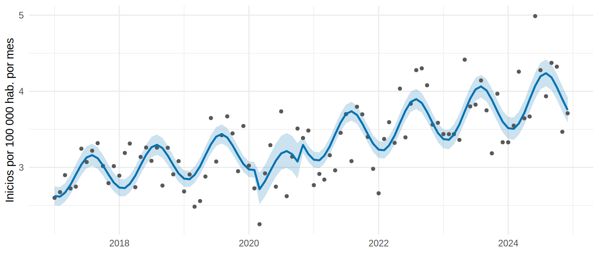

Modelos para conteos: tendencia, estacionalidad y población
El comité de planificación te pide una cifra concreta: ¿cuántos cupos de hemodiálisis harán falta el próximo año? Antes de proyectar necesitas un modelo que diga cuánto crecen los inicios de diálisis cada año, cuánto suben en la temporada alta, y qué tan seguro estás. Los datos son conteos (130, 142, 175 pacientes por mes), y los conteos tienen sus propias reglas.
Lo que vamos a hacer
- Ajustar un modelo de Poisson con tendencia y estacionalidad, usando la población como offset.
- Revisar la sobredispersión y compararla con la quasi-Poisson y la binomial negativa.
- Elegir cómo modelar la estacionalidad y la tendencia, y proyectar el año siguiente con cautela.
Paso 1. ¿Por qué no una regresión lineal?
Una regresión lineal sobre los conteos supone una variación constante y efectos aditivos (+0.5 pacientes cada mes, sea cual sea el nivel). Pero un conteo tiene tres rasgos que la regresión lineal ignora:
- No puede ser negativo y es un entero.
- Su variabilidad crece con el nivel: un mes de 30 casos fluctúa menos, en términos absolutos, que uno de 150.
- Los efectos suelen ser proporcionales: el invierno aumenta los ingresos un 10 %, no «+15 pacientes».
El modelo natural es el de Poisson, un modelo lineal generalizado (como la regresión logística del Cap. 8.3) con enlace log. Para un conteo \(Y_t\) en el mes \(t\):
\[ \ln E(Y_t) = \ln(\text{población}_t) + \beta_0 + \beta_1\, t + \text{estacionalidad}_t \qquad \Rightarrow \qquad e^{\beta_1} = \text{razón de tasas por mes} \]
El término \(\ln(\text{población}_t)\) es el offset: una variable que entra al modelo con coeficiente fijo 1. Con él, el modelo ya no explica casos sino tasas (casos por habitante). Es lo mismo que hicimos con el tiempo de seguimiento en el Cap. 8.3.
Paso 2. Tendencia y estacionalidad con armónicos
Tendencia: una recta en el tiempo (tiempo, en meses). Como el modelo es log-lineal, esa recta es un crecimiento porcentual constante por mes.
Estacionalidad: hay dos formas. La primera es una variable por mes (11 indicadores): flexible, pero gasta muchos parámetros. La segunda usa armónicos (términos de Fourier): un seno y un coseno con período de 12 meses. Sumados, dibujan una onda con cualquier altura y cualquier fase (el mes del pico) con solo 2 parámetros. Ya los dejó preparados preparar_serie():
# A tibble: 4 × 5
fecha mes tiempo s1 c1
<date> <dbl> <dbl> <dbl> <dbl>
1 2017-01-01 1 0 0.5 0.87
2 2017-04-01 4 3 0.87 -0.5
3 2017-07-01 7 6 -0.5 -0.87
4 2017-10-01 10 9 -0.87 0.5 # s1 = sin(2 * pi * mes / 12) c1 = cos(2 * pi * mes / 12)Además incluimos ola_covid (1 entre marzo y octubre de 2020): un evento externo conocido que afectó a toda la región. Ajustamos el Poisson:
m_pois <- glm(casos ~ tiempo + s1 + c1 + ola_covid + offset(log(poblacion)),
family = poisson, data = control)
broom::tidy(m_pois, conf.int = TRUE, exponentiate = TRUE) |> # exponentiate = TRUE: razones de tasas
filter(term != "(Intercept)") |> # el intercepto no tiene lectura útil aquí
select(term, RR = estimate, inf = conf.low, sup = conf.high) |>
mutate(across(where(is.numeric), \(x) round(x, 4))) |>
as.data.frame() term RR inf sup
1 tiempo 1.0035 1.0029 1.0041
2 s1 0.9345 0.9118 0.9577
3 c1 0.9503 0.9272 0.9740
4 ola_covid 0.8969 0.8388 0.9578tiempo es la razón de tasas por mes; s1 y c1 no se leen por separado (solo juntos describen la onda); ola_covid es la razón de tasas del evento. Lo importante:
Qué vemos.
- Tendencia: la tasa crece 4.3 % al año (IC 95 %: 3.5 a 5.1 %). La verdad simulada es +4.9 %: el estimado queda muy cerca.
- Estacionalidad: la onda tiene amplitud 0.085 (el mes pico queda un 9 % sobre el promedio) y su pico cae hacia el mes 7.8 (entre julio y agosto). La verdad: amplitud 0.10 y pico en julio (mes 7). Aquí, a diferencia de STL, el pico sale estable porque la onda se ajusta con los 96 meses a la vez.
- Ola COVID: la razón de tasas del evento es 0.90, es decir, 10 % menos ingresos en esos ocho meses (la verdad es 14 % menos; el estimado es menos preciso porque son solo 8 meses).
Paso 3. Sobredispersión: ¿el Poisson se está pasando de optimista?
El Poisson supone que la varianza es igual a la media. Con datos reales, la varianza suele ser mayor (sobredispersión): meses con más brotes, errores de registro, factores no medidos. Si eso ocurre, los coeficientes siguen bien, pero los errores estándar son demasiado pequeños y los intervalos, demasiado estrechos (lo mismo que vimos con la peritonitis en el Cap. 8.3).
Un diagnóstico rápido es el cociente χ² de Pearson / grados de libertad residuales: ≈ 1 si todo va bien; claramente > 1 si hay sobredispersión.
disp <- sum(residuals(m_pois, type = "pearson")^2) / df.residual(m_pois)
round(disp, 2)[1] 1.19El cociente es 1.19: sobredispersión leve (la varianza es un 19 % mayor que lo que supone Poisson). Comparamos el error estándar con tres remedios: la quasi-Poisson (estima ese cociente y agranda los errores), la binomial negativa (agrega un parámetro de dispersión) y el sándwich (errores robustos).
f <- casos ~ tiempo + s1 + c1 + ola_covid + offset(log(poblacion))
m_quasi <- glm(f, family = quasipoisson, data = control)
m_nb <- MASS::glm.nb(f, data = control) # binomial negativa
ee <- cbind(Poisson = sqrt(diag(vcov(m_pois))),
`Quasi-Poisson` = sqrt(diag(vcov(m_quasi))),
`Binomial negativa` = sqrt(diag(vcov(m_nb))),
Sándwich = sqrt(diag(vcovHC(m_pois, type = "HC0"))))
# Cada error estándar dividido entre el del Poisson (1.00 = igual; > 1 = más prudente)
round(ee[c("tiempo", "s1", "c1", "ola_covid"), ] / ee[c("tiempo", "s1", "c1", "ola_covid"), "Poisson"], 2) Poisson Quasi-Poisson Binomial negativa Sándwich
tiempo 1 1.09 1.07 0.99
s1 1 1.09 1.07 1.08
c1 1 1.09 1.07 1.05
ola_covid 1 1.09 1.06 1.42Qué vemos. Las estimaciones puntuales apenas cambian entre modelos (el coeficiente de tiempo es 0.0035 en Poisson y 0.0035 en binomial negativa). Lo que cambia es la incertidumbre: los errores estándar de la quasi-Poisson son un 9 % mayores que los del Poisson, justo la raíz cuadrada del cociente de dispersión (1.09), y los de la binomial negativa son parecidos. El sándwich sin corregir por tiempo cambia de forma desigual según el coeficiente. Con una sobredispersión tan leve la decisión no es dramática, pero conviene siempre mirarla: con más ruido (o más casos por mes) la diferencia crece rápido. La regla práctica: usa quasi-Poisson o binomial negativa por defecto, y Poisson puro solo si el cociente está cerca de 1.
Poisson, quasi-Poisson y binomial negativa suponen que los meses son independientes. En una serie de tiempo casi nunca lo son: un mes alto suele ir seguido de otro mes alto. Esa autocorrelación también encoge los errores estándar, y ni la quasi-Poisson ni la binomial negativa la corrigen. Aquí el residuo parece bien (Ljung-Box p = 0.40), pero en 15.3 y 15.4 veremos una serie donde no.
Paso 4. ¿Cuánta flexibilidad necesito?
Hay tres decisiones de forma: cuántos armónicos usar, si la estacionalidad va mejor con un indicador por mes, y si la tendencia debe ser una recta o una curva (por ejemplo, un spline natural). Se comparan con el AIC (criterio de información de Akaike; menor es mejor) entre modelos Poisson con los mismos datos:
library(splines)
m_sin_estac <- update(m_pois, . ~ . - s1 - c1) # sin estacionalidad
m_k2 <- update(m_pois, . ~ . + sin(4 * pi * mes / 12) + cos(4 * pi * mes / 12)) # 2 armónicos
m_mes <- update(m_pois, . ~ . - s1 - c1 + factor(mes)) # un indicador por mes
m_spline <- update(m_pois, . ~ . - tiempo + ns(tiempo, df = 4)) # tendencia flexible
tibble(modelo = c("Sin estacionalidad", "1 armónico (el nuestro)", "2 armónicos", "Un indicador por mes", "Tendencia con spline (4 gl)"),
parametros = c(length(coef(m_sin_estac)), length(coef(m_pois)), length(coef(m_k2)), length(coef(m_mes)), length(coef(m_spline))),
AIC = c(AIC(m_sin_estac), AIC(m_pois), AIC(m_k2), AIC(m_mes), AIC(m_spline))) |>
mutate(AIC = round(AIC, 1))# A tibble: 5 × 3
modelo parametros AIC
<chr> <int> <dbl>
1 Sin estacionalidad 3 806.
2 1 armónico (el nuestro) 5 765.
3 2 armónicos 7 769.
4 Un indicador por mes 14 774.
5 Tendencia con spline (4 gl) 8 767.Qué vemos. Incluir la estacionalidad mejora el AIC en unos 41 puntos: era imprescindible. Pero a partir de un armónico más complejidad no ayuda (2 armónicos, un indicador por mes y el spline quedan peor o igual): la onda anual sencilla describe bien esta serie, que es justo como se simuló. En datos reales, la estacionalidad rara vez es una onda perfecta (por ejemplo, un pico agudo en invierno): ahí un segundo armónico sí puede ayudar. Decide con el AIC y con el gráfico.
mgcv
El paquete mgcv (modelos aditivos generalizados) estima la forma de la tendencia y de la estacionalidad a partir de los datos, con una spline cíclica para el mes (el diciembre empalma con el enero). Los grados de libertad efectivos (edf) dicen qué tan curva es cada parte: ≈ 1 es una recta.
[1] 1.4 2.7La tendencia tiene 1.4 grados de libertad efectivos (casi una recta; hay poco que flexibilizar) y la estacionalidad 2.7 (una onda suave, no 11 indicadores): la misma historia que cuenta el AIC.
Paso 5. El offset, en acción
¿Qué pasa si olvidamos la población? Ajustamos el mismo modelo sin el offset y comparamos el crecimiento anual:
m_sin_offset <- glm(casos ~ tiempo + s1 + c1 + ola_covid, family = poisson, data = control)
tibble(modelo = c("Con offset (tasa)", "Sin offset (casos)"),
crecimiento_anual_pct = 100 * c(exp(12 * coef(m_pois)["tiempo"]), exp(12 * coef(m_sin_offset)["tiempo"])) - 100) |>
mutate(crecimiento_anual_pct = round(crecimiento_anual_pct, 2))# A tibble: 2 × 2
modelo crecimiento_anual_pct
<chr> <dbl>
1 Con offset (tasa) 4.27
2 Sin offset (casos) 4.59Sin offset, el modelo atribuye a la tendencia también el crecimiento de la población (0.3 % al año en esta región). Aquí la diferencia es pequeña porque la población casi no cambia, pero imagina una región que duplica su población en 8 años: sin offset parecería que el riesgo de iniciar diálisis se duplicó cuando no cambió. Es crucial cuando se comparan regiones de distinto tamaño (15.5).
Paso 6. La curva ajustada y una proyección prudente
Dibujamos la tasa observada (casos por 100 000) con la curva del modelo y su intervalo de confianza. Usamos la quasi-Poisson, que ya incluye la dispersión en los errores:
pred <- predict(m_quasi, type = "link", se.fit = TRUE)
control <- control |>
mutate(ajustada = exp(pred$fit) / poblacion * 1e5,
inf = exp(pred$fit - 1.96 * pred$se.fit) / poblacion * 1e5,
sup = exp(pred$fit + 1.96 * pred$se.fit) / poblacion * 1e5)
ggplot(control, aes(fecha)) +
geom_ribbon(aes(ymin = inf, ymax = sup), fill = "#0072B2", alpha = 0.2) +
geom_point(aes(y = tasa), colour = "grey35", size = 1.2) +
geom_line(aes(y = ajustada), colour = "#0072B2", linewidth = 0.9) +
labs(x = NULL, y = "Inicios por 100 000 hab. por mes") +
theme_minimal(base_size = 11)
La curva sigue bien la tendencia y la onda anual, y el descenso de 2020 lo absorbe ola_covid. Para contestar al comité, proyectamos 2025 suponiendo que la población sigue creciendo como hasta ahora y que no hay otro evento:
nuevo <- tibble(mes_num = 97:108, mes = 1:12) |>
mutate(tiempo = mes_num - 1, s1 = sin(2 * pi * mes / 12), c1 = cos(2 * pi * mes / 12), ola_covid = 0,
poblacion = round(control$poblacion[96] * 1.003^(mes / 12))) # +0.3 % anual, como en 2017-2024
esperado_2025 <- sum(predict(m_quasi, nuevo, type = "response"))
# Intervalo para el total esperado: simulamos coeficientes plausibles del modelo
set.seed(2025)
b_sim <- MASS::mvrnorm(2000, coef(m_quasi), vcov(m_quasi))
X <- model.matrix(~ tiempo + s1 + c1 + ola_covid, nuevo)
tot_sim <- apply(b_sim, 1, \(b) sum(exp(X %*% b + log(nuevo$poblacion))))
c(esperado_2025 = esperado_2025, quantile(tot_sim, c(0.025, 0.975))) |> round()esperado_2025 2.5% 97.5%
1994 1915 2074 En 2024 hubo 1944 inicios; el modelo espera 1994 en 2025 (IC 95 % del promedio esperado: 1915 a 2074). Dos advertencias: es un intervalo para el número esperado, no para el que realmente ocurrirá (este tendría el azar de cada mes y sería más ancho), y es una extrapolación: supone que la tendencia y la estacionalidad siguen igual. Para pronósticos con intervalos de predicción honestos (y evaluados contra datos futuros) usaremos 15.4.
- Olvidar el offset de población (o usar tasas ya calculadas como si fueran conteos): confunde el crecimiento de la población con un aumento del riesgo.
- Pasarse de flexible: con 96 meses, un spline muy flexible o muchos armónicos “aprenden” el ruido. Si quieres comparar con un modelo más simple, hazlo contra datos no usados para ajustar (15.4).
- Los conteos se modelan con Poisson (enlace log); \(e^{\beta}\) es una razón de tasas y el offset
log(poblacion)convierte casos en tasas. -
Tendencia lineal en el tiempo y estacionalidad con armónicos (
sinycosde2π·mes/12): dos parámetros bastan para una onda anual; el crecimiento anual esexp(12 * coef). - Revisa la sobredispersión (χ² de Pearson / gl > 1): usa quasi-Poisson o binomial negativa o errores robustos. No corrige la autocorrelación.
- Compara la flexibilidad con el AIC y con el gráfico; un modelo más complejo no es mejor por serlo.
- Un evento externo conocido (la ola COVID) se incluye como covariable; una proyección es una extrapolación.
Ejercicio
- Ajusta el mismo modelo a la región Intervenida usando solo los meses anteriores al programa (
mes_num <= 48). ¿Se parecen la tendencia y la estacionalidad a las de la región control? - Calcula la razón de tasas de la temporada alta contra la baja comparando el mes pico con el mes valle del modelo (usa
amplitud_pico(); el mes pico vs. el valle opuesto difieren enexp(2 * amplitud)). - Reajusta el modelo con
family = poissonpero quitandoola_covid. ¿Qué pasa con la tendencia y con el cociente de dispersión? ¿Por qué?